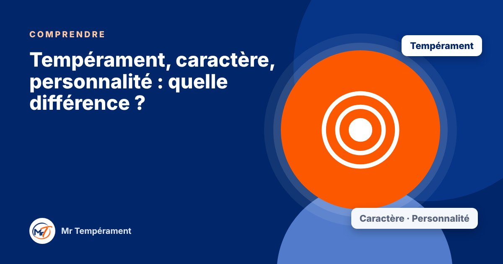

Tempérament, caractère, personnalité : quelle différence ?

Trois mots que l'on confond souvent, et qui décrivent pourtant trois couches différentes de vous.
On emploie ces trois mots comme s'ils voulaient dire la même chose. « Il a un sale caractère », « Elle a une forte personnalité », « C'est son tempérament »… Pourtant, chacun éclaire quelque chose de différent. Les distinguer vous aide à comprendre ce qui est naturel chez vous, ce que vous avez appris, et ce que vous pouvez encore faire évoluer.
Le tempérament : votre façon naturelle de réagir
Le tempérament est votre manière spontanée d'agir, de décider, d'entrer en relation et de réagir aux émotions. Il apparaît tôt, souvent dès l'enfance, et reste relativement stable. Face à une même situation, une personne passe à l'action, une autre cherche à en parler, une troisième garde le calme, une quatrième analyse d'abord. Rien de tout cela n'est un choix : c'est une tendance de départ.
Dans le DISC, on décrit quatre grands tempéraments : Dominant, Influent, Stable et Consciencieux. Nous avons un peu des quatre, et l'un d'eux domine souvent.
Le caractère : ce que la vie a façonné
Le caractère, lui, se construit. Votre éducation, vos expériences, vos épreuves, vos valeurs et vos choix ont façonné vos habitudes, votre rigueur, votre manière de tenir vos engagements. On peut travailler son caractère : apprendre la patience, la ponctualité, l'écoute. C'est ce qui explique que deux personnes de même tempérament puissent être très différentes.
La personnalité : l'ensemble que les autres voient
La personnalité est le tout : ce que les autres perçoivent de vous. Elle mélange votre tempérament, votre caractère, votre histoire, votre culture et votre contexte du moment. C'est la plus visible et la plus riche des trois couches.
Pourquoi cette distinction vous aide
Si vous confondez tout, vous risquez de vous enfermer : « Je suis comme ça, je n'y peux rien. » En séparant les couches, vous voyez mieux ce qui est une tendance naturelle (que vous apprenez à utiliser), et ce qui est une habitude (que vous pouvez changer).
Un tempérament n'est pas une prison. C'est un point de départ. Une carte, jamais une cage.
Pour aller plus loin
Pour découvrir votre tempérament dominant en une minute, commencez par le test gratuit : cinq questions, un résultat immédiat, sans inscription.
Faire le test gratuit